Cyberops
L'IDS est une sonde d'intrusion. Port mirroring vers cette sonde qui analyse en différé. L'IPS est une sonde de prévention d'intrusion. Le trafic passe directement par la sonde qui fonctionne en temps réel.
RTT: Round Time Trip MSS: Maximum Size Segment (volume de data échangeable) PAR: Positive Acknowledgement Retransmission
Déni de service TCP: on envoie plein de SYN sans répondre aux ACK.
Réseau botnet: réseau de postes zombies.
Attaque bail DHCP: Les clients renouvellent leur bail à 50% du temps restant. Si pas de réponse, il refait un renew a 75% du temps puis un nouveau Discovery a 87.5% du bail. On peut spoof le serveur DHCP si on lui prend toutes ses adresses (il arrête de répondre)
Outils: packet tracer packet bulker | scapy (forge de trammes) | softperfect network protocol analyzer packet sender | locky |
On peut utiliser le corps du PING pour transmettre des données
Un switch avec une table saturée passe en mode hub.
CCNA⚓︎
1. Which two statements are characteristics of a virus? (Choose two.)
- A virus typically requires end-user activation.
- A virus can be dormant and then activate at a specific time or date.
- Malware is contained in a seemingly legitimate executable program.
- phishing
- They can separate user traffic.
- CapME
- Wazuh
- Zeek
- risk analysis
- risk sharing
- Approximately 5 minutes per year.
- The request was completed successfully.
- Messages are kept in the mail servers until they are manually deleted from the email client.
- WinDbg
- If a host is ready to send a packet to a local destination device and it has the IP address but not the MAC address of the destination, it generates an ARP broadcast.
- If a device receiving an ARP request has the destination IPv4 address, it responds with an ARP reply.
- Entries in an ARP table are time-stamped and are purged after the timeout expires.
- to allow users to browse the Internet anonymously
- DNS
- HTTP
- NetFlow collects metadata from a network flow whereas Wireshark captures full data packets.
- tcpdump
- use SSH and disable the root account access over SSH
- shell
- single process for authentication and authorization
- hidden passwords during transmission
- Vulnerabilities in systems are exploited to grant higher levels of privilege than someone or some process should have.
- The code has not been modified since it left the software publisher.
- The code is authentic and is actually sourced by the publisher.
- HTTPS web service
- 802.1x authentication
- Deploy a Cisco SSL Appliance.
- Rights and activities permitted on the corporate network must be defined.
- Safeguards must be put in place for any personal device being compromised.
- The level of access of employees when connecting to the corporate network must be defined.
- SQL injection
- They are expressed as 12 hexadecimal digits.
- They are globally unique.
- The TCP/IP implementation is functional.
- They always try to cause some harm to an individual or organization.
- a type of ransomware
- router advertisement
- Beats
- IPsec traffic
- SSL traffic
- Logstash
- attrition
- It is a set of standardized schemata for specifying, capturing, characterizing, and communicating events and properties of network operations.
- by collecting information about a network
- by providing a conduit for DoS attacks
- fragment offset
- flag
- identification
- net share
- net use
- frame
- when the value in the TTL field reaches zero
- a GRE tunnel
- detection and identification of open ports
- DHCP starvation
- application, transport, Internet, and network access layers
- authorization
- discover the AP
- 2001:0db8:cafe:4500
- rootkit
- risk reduction
- It is a systematic and multilayered approach to cybersecurity.
- It consists of a set of practices that are systematically applied to ensure continuous improvement in information security.
- It consists of a management framework through which an organization identifies, analyzes, and addresses information security risks.
- event collection, correlation, and analysis
- security monitoring
- threat intelligence
- .com
- making data appear to come from a source that is not the actual source
- After implementing third party security software for the company, the technician should verify that the Windows Firewall is disabled.
- Session data records a conversation between hosts, whereas transaction data focuses on the result of network sessions.
- Cisco Catalyst switch
- playbook
- source quench
- A retrospective analysis can help in tracking the behavior of the malware from the identification point forward.
- vehicle identification number
- Facebook photographs
- to transmit viruses or spam to computers on the same network
- to attack other computers
- If a public key is used to encrypt the data, a private key must be used to decrypt the data.
- If a private key is used to encrypt the data, a public key must be used to decrypt the data.
- guarantees data has not changed in transit
- provides data encryption
- authenticates the source
- CRL
- OCSP
- ACLs provide a basic level of security for network access.
- ACLs can control which areas a host can access on a network.
- It must send an ICMPv6 Neighbor Solicitation message to ensure that the address is not already in use on the network.
- tracert
- pivot
- rootkit
- Perform forensic analysis of endpoints for rapid triage.
- Detect data exfiltration, lateral movement, and unauthorized credential usage.
- control bits
- the destination port number
- when random variables create difficulty in knowing with certainty the outcome of any given event
- when analyzing applications designed to circumvent firewalls
- CapME
- The default gateway of an IPv6 client on a LAN will be the link-local address of the router interface attached to the LAN.
- IPv6 addressing is dynamically assigned to clients through the use of ICMPv6.
- Task Manager
- by comparing normal network behavior to current network behavior
- the proximity of the threat actor to the vulnerability
- protect
- amplification
- reflection
- to aggregate the data in one place and present it in a comprehensible and usable format
- passive mode
- rogue access point
- FQDN of the domain
- They are referred to as a pre-shared key or secret key.
- They are commonly used with VPN traffic.
- With HIPS, the network administrator must verify support for all the different operating systems used in the network.
- HIPS has difficulty constructing an accurate network picture or coordinating events that occur across the entire network.
- to select the type of logging information that is captured
- to gather logging information for monitoring and troubleshooting
- to specify the destinations of captured messages
- Synchronize clocks on all network devices with a protocol such as Network Time Protocol.
- They attack the NTP infrastructure in order to corrupt the information used to log the attack.
- Threat actors use NTP systems to direct DDoS attacks.
- password encryption
- utilization of transport layer protocols
- amplification and reflection
- resource utilization
- to determine potential vulnerabilities
- to identify operating systems
- to identify active services
- DNS
- Every device in a peer-to-peer network can function as a client or a server.
- They define how messages are exchanged between the source and the destination.
- Analyze the infrastructure storage path used for files.
- methodology
- kill
- Prime
- system logs
- Encrypt the data.
- configuration management
- full packet capture
- alert analysis
- intrusion detection
- outside global
- minimum frame size
- Frame Check Sequence
- memory registers
- Break the vulnerability and gain control of the target.
- R1
- Snort
- SpamCop
- ClamAV
- Windows Firewall
- to verify the validity of the digital certificate
- assess
- asset management
- true positive
- SMB
- firewall
- On large networks with low bandwidth, multiple ARP broadcasts could cause data communication delays.
- Escalate an uncertain alert.
- Categorize true positives.
- Expire false positives.
- usage-based network billing
- network monitoring
- Revise the AUP immediately and get all users to sign the updated AUP.
- forwarding name resolution requests between servers
- mapping name-to-IP addresses for internal hosts
- network discovery
- Acquire and deploy the tools that are needed to investigate incidents.
- Create and train the CSIRT.
- 255.255.240.0
- allows easy processing and analysis of datasets
- CCNA CyberOps Associate
- 192.168.5.29
- 172.17.254.4
- 10.234.2.1
- session duration
- discover a wireless AP, authenticate with the AP, associate with the AP
- The output is a fixed length.
- The hash function is one way and irreversible.
- only hosts B, C, and router R1
- indirect
- random variables that create difficulty in knowing the outcome of any given event with certainty
- It can be acquired at no charge.
- ls -l
- DNS
- SMTP
- CDFS
- to send stolen sensitive data with encoding
- CNT
- R1: G0/0
- Analyze web log alerts and historical search data.
- Build playbooks for detecting browser behavior.
- neighbor solicitation
- neighbor advertisement
- a single IP multicast address that is used by all destinations in a group
- The devices introduce processing delays and privacy issues.
- Using free DDNS services, threat actors can quickly and easily generate subdomains and change DNS records.
- Obtain an automated tool in order to deliver the malware payload through the vulnerability.
- Beats
- data reduction
- reporting
- by frequency
- Gnome
- KDE
- transmitting a probe request
- receiving a broadcast beacon frame
- 443
- Best evidence
- The destination IP address is 255.255.255.255.
- The message comes from a client seeking an IP address.
- All hosts receive the message, but only a DHCP server replies.
- prioritize assets
- directing data packets to destination hosts on other networks
- providing end devices with a unique network identifier
2. What is a characteristic of a Trojan horse as it relates to network security?
3. What technique is used in social engineering attacks?
4. What is a purpose of implementing VLANs on a network?
5. Refer to the exhibit. A cybersecurity analyst is viewing packets forwarded by switch S2. What addresses will identify frames containing data sent from PCA to PCB?
Src IP: 192.168.1.212
6. A cybersecurity analyst needs to collect alert data. What are three detection tools to perform this task in the Security Onion architecture? (Choose three.)
7. Match the Security Onion tool with the description.
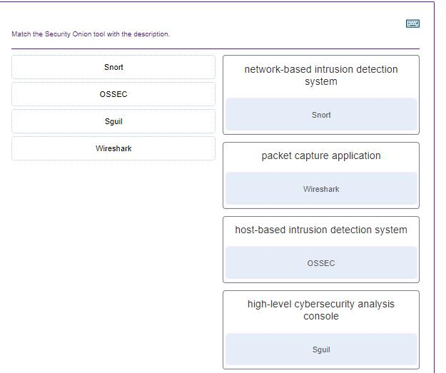
8. In network security assessments, which type of test is used to evaluate the risk posed by vulnerabilities to a specific organization including assessment of the likelihood of attacks and the impact of successful exploits on the organization?
9. Match the server profile element to the description. (Not all options are used.)
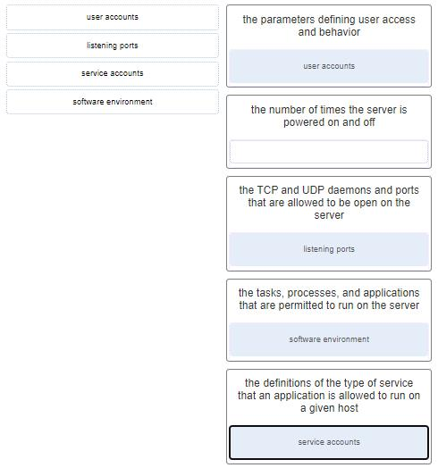
Explanation: The elements of a server profile include the following:Listening ports – the TCP and UDP daemons and ports that are allowed to be open on the server
User accounts – the parameters defining user access and behavior
Service accounts – the definitions of the type of service that an application is allowed to run on a given host
Software environment – the tasks, processes, and applications that are permitted to run on the server
10. In addressing an identified risk, which strategy aims to shift some of the risk to other parties?
11. What is a network tap?
12. Match the monitoring tool to the definition.
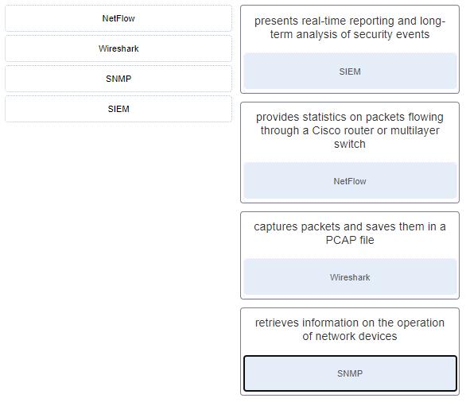
13. If a SOC has a goal of 99.999% uptime, how many minutes of downtime a year would be considered within its goal?
14. The HTTP server has responded to a client request with a 200 status code. What does this status code indicate?
15. What is an advantage for small organizations of adopting IMAP instead of POP?
16. What debugging security tool can be used by black hats to reverse engineer binary files when writing exploits?
18. What are two features of ARP? (Choose two.)
19. What is a property of the ARP table on a device?
21. Which two network protocols can be used by a threat actor to exfiltrate data in traffic that is disguised as normal network traffic? (Choose two.)
22. What is a key difference between the data captured by NetFlow and data captured by Wireshark?
23. Which tool captures full data packets with a command-line interface only?
24. Which method can be used to harden a device?
Explanation: The basic best practices for device hardening are as follows:
25. In a Linux operating system, which component interprets user commands and attempts to execute them?
26. A network administrator is configuring an AAA server to manage RADIUS authentication. Which two features are included in RADIUS authentication? (Choose two.)
27. What is privilege escalation?
28. What two assurances does digital signing provide about code that is downloaded from the Internet? (Choose two.)
29. An IT enterprise is recommending the use of PKI applications to securely exchange information between the employees. In which two cases might an organization use PKI applications to securely exchange information between users? (Choose two.)
30. Which measure can a security analyst take to perform effective security monitoring against network traffic encrypted by SSL technology?
31. An administrator is trying to develop a BYOD security policy for employees that are bringing a wide range of devices to connect to the company network. Which three objectives must the BYOD security policy address? (Choose three.)
32. Match the security policy with the description. (Not all options are used.)
 - FINAL Exam (Answers) 7")
| identifies network applications and uses that are acceptable to the organization | acceptable use policy (AUP) |
| identifies how remote users can access a network and what is accessible via remote connectivity | remote access policy |
| specifies authorized persons that can have access to network resources and identity verification procedures | identification and authentication policy |
| specifies network device operating systems and end user application update procedures | network maintenance policy |
33. Match the attack to the definition. (Not all options are used.)
35. What are two characteristics of Ethernet MAC addresses? (Choose two.)
36. A user calls to report that a PC cannot access the internet. The network technician asks the user to issue the command ping 127.0.0.1 in a command prompt window. The user reports that the result is four positive replies. What conclusion can be drawn based on this connectivity test?
39. Which ICMPv6 message type provides network addressing information to hosts that use SLAAC?
40. Which tol included in the Security Onion is a series of software plugins that send different types of data to the Elasticsearch data stores?
41. Which two types of unreadable network traffic could be eliminated from data collected by NSM? (Choose two.)
42. Which core open source component of the Elastic-stack is responsible for accepting the data in its native format and making elements of the data consistent across all sources?
43. Match the security incident stakeholder with the role.
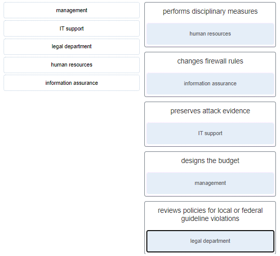
45. Match the security organization with its security functions. (Not all options are used.)
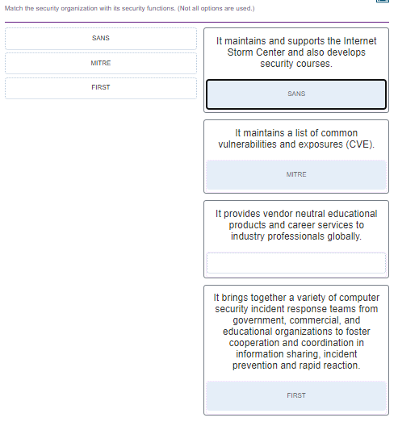
46. What is a characteristic of CybOX?
47. After host A receives a web page from server B, host A terminates the connection with server B. Match each step to its correct option in the normal termination process for a TCP connection. (Not all options are used.)
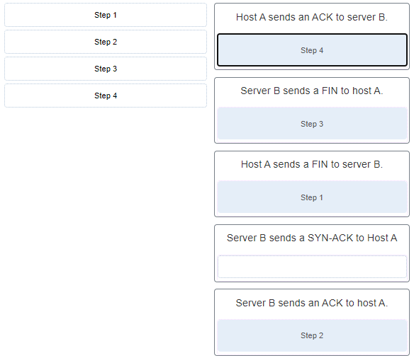
48. What are two ways that ICMP can be a security threat to a company? (Choose two.)
49. Which three IPv4 header fields have no equivalent in an IPv6 header? (Choose three.)
50. Which two net commands are associated with network resource sharing? (Choose two.)
51. Match the Windows 10 Registry key with its description. (Not all options are used.)
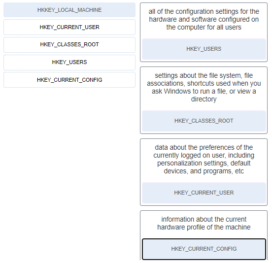
52. Which PDU format is used when bits are received from the network medium by the NIC of a host?
53. A user is executing a tracert to a remote device. At what point would a router, which is in the path to the destination device, stop forwarding the packet?
54. Refer to the exhibit. What solution can provide a VPN between site A and site B to support encapsulation of any Layer 3 protocol between the internal networks at each site?
55. For what purpose would a network administrator use the Nmap tool?
56. Match the network service with the description.
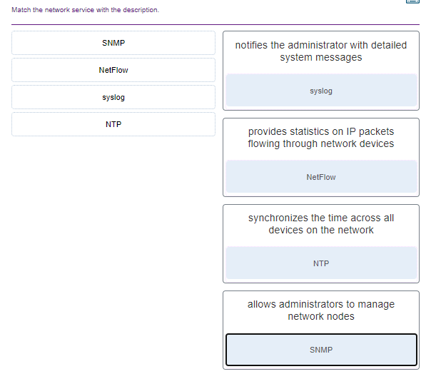
57. A client application needs to terminate a TCP communication session with a server. Place the termination process steps in the order that they will occur. (Nat all options are used.)
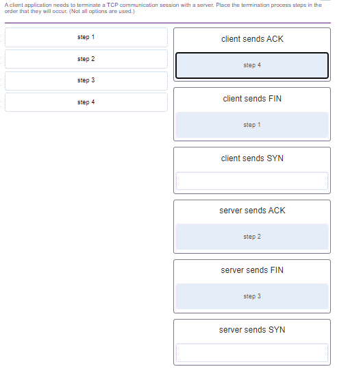
58. Match the attack surface with attack exploits.
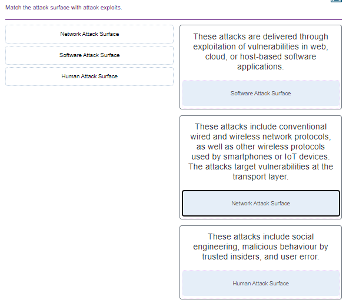
59. Match the Linux host-based firewall application with its description.
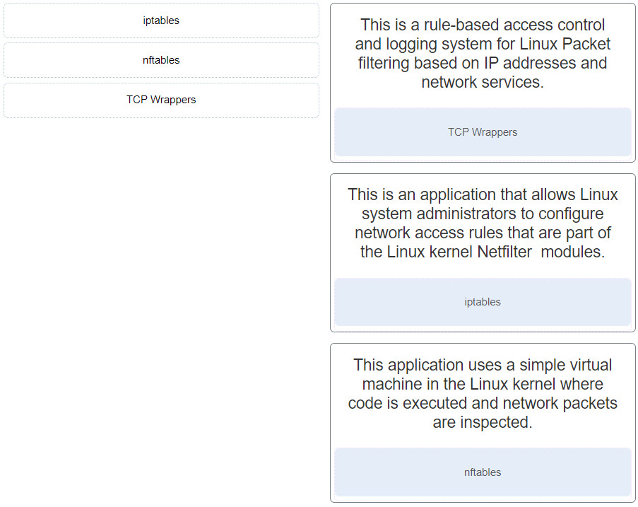
60. What network attack seeks to create a DoS for clients by preventing them from being able to obtain a DHCP lease?
61. Refer to the exhibit. If Host1 were to transfer a file to the server, what layers of the TCP/IP model would be used?
62. A company has a file server that shares a folder named Public. The network security policy specifies that the Public folder is assigned Read-Only rights to anyone who can log into the server while the Edit rights are assigned only to the network admin group. Which component is addressed in the AAA network service framework?
63. Match the destination network routing table entry type with a defintion.
 - FINAL Exam (Answers) 19")
64. A person coming to a cafe for the first time wants to gain wireless access to the Internet using a laptop. What is the first step the wireless client will do in order to communicate over the network using a wireless management frame?
65. A device has been assigned the IPv6 address of 2001:0db8:cafe:4500:1000:00d8:0058:00ab/64. Which is the network identifier of the device?
66. An administrator wants to create four subnetworks from the network address 192.168.1.0/24. What is the network address and subnet mask of the second useable subnet?
subnetwork 192.168.1.64 67. What term describes a set of software tools designed to increase the privileges of a user or to grant access to the user to portions of the operating system that should not normally be allowed? 68. The IT security personnel of an organization notice that the web server deployed in the DMZ is frequently targeted by threat actors. The decision is made to implement a patch management system to manage the server. Which risk management strategy method is being used to respond to the identified risk? 69. What are three characteristics of an information security management system? (Choose three.) 70. Which three technologies should be included in a SOC security information and event management system? (Choose three.) 71. What part of the URL, http://www.cisco.com/index.html, represents the top-level DNS domain? 72. What best describes the security threat of spoofing? 73. A newly created company has fifteen Windows 10 computers that need to be installed before the company can open for business. What is a best practice that the technician should implement when configuring the Windows Firewall? 74. Which statement defines the difference between session data and transaction data in logs? 75. Match the network monitoring data type with the description. 76. Which device supports the use of SPAN to enable monitoring of malicious activity? 77. Which term is used for describing automated queries that are useful for adding efficiency to the cyberoperations workflow? 78. When ACLs are configured to block IP address spoofing and DoS flood attacks, which ICMP message should be allowed both inbound and outbound? 79. After a security monitoring tool identifies a malware attachment entering the network, what is the benefit of performing a retrospective analysis? 80. Which two data types would be classified as personally identifiable information (PII)? (Choose two.) 81. A help desk technician notices an increased number of calls relating to the performance of computers located at the manufacturing plant. The technician believes that botnets are causing the issue. What are two purposes of botnets? (Choose two.) 82. Which two statements describe the use of asymmetric algorithms? (Choose two.) 83. Which three security services are provided by digital signatures? (Choose three.) 84. What are two methods to maintain certificate revocation status? (Choose two.) 85. What are two uses of an access control list? (Choose two.) 86. A client is using SLAAC to obtain an IPv6 address for the interface. After an address has been generated and applied to the interface, what must the client do before it can begin to use this IPv6 address? 87. A technician is troubleshooting a network connectivity problem. Pings to the local wireless router are successful but pings to a server on the Internet are unsuccessful. Which CLI command could assist the technician to find the location of the networking problem? 88. What are two evasion techniques that are used by hackers? (Choose two.) 89. When a security attack has occurred, which two approaches should security professionals take to mitigate a compromised system during the Actions on Objectives step as defined by the Cyber Kill Chain model? (Choose two.) 90. Place the seven steps defined in the Cyber Kill Chain in the correct order. 91. Which field in the TCP header indicates the status of the three-way handshake process? 92. A user opens three browsers on the same PC to access www.cisco.com to search for certification course information. The Cisco web server sends a datagram as a reply to the request from one of the web browsers. Which information is used by the TCP/IP protocol stack in the PC to identify which of the three web browsers should receive the reply? 93. What are two scenarios where probabilistic security analysis is best suited? (Choose two.) 94. Which tool is a web application that provides the cybersecurity analyst an easy-to-read means of viewing an entire Layer 4 session? 95. Match the category of attacks with the description. (Not all options are used.) 96. What are two characteristics of the SLAAC method for IPv6 address configuration? (Choose two.) 97. A technician notices that an application is not responding to commands and that the computer seems to respond slowly when applications are opened. What is the best administrative tool to force the release of system resources from the unresponsive application? 98. How can statistical data be used to describe or predict network behavior? 99. Which metric in the CVSS Base Metric Group is used with an attack vector? Explanation: This is a metric that reflects the proximity of the threat actor to the vulnerable component. The more remote the threat actor is to the component, the higher the severity. Threat actors close to your network or inside your network are easier to detect and mitigate. 100. Which NIST Cybersecurity Framework core function is concerned with the development and implementation of safeguards that ensure the delivery of critical infrastructure services? 102. What is the primary objective of a threat intelligence platform (TIP)? 103. Which wireless parameter is used by an access point to broadcast frames that include the SSID? 104. Match the field in the Event table of Sguil to the description. Match the field in the Event table of Sguil to the description 105. An employee connects wirelessly to the company network using a cell phone. The employee then configures the cell phone to act as a wireless access point that will allow new employees to connect to the company network. Which type of security threat best describes this situation? 106. What information is required for a WHOIS query? 108. What are two drawbacks to using HIPS? (Choose two.) 109. What are three functions provided by the syslog service? (Choose three.) 110. Which consideration is important when implementing syslog in a network? 111. What are the two ways threat actors use NTP? (Choose two.) 112. Which two features are included by both TACACS+ and RADIUS protocols? (Choose two.) 113. Match the SIEM function to the description. 114. What are two types of attacks used on DNS open resolvers? (Choose two.) 115. What are three goals of a port scan attack? (Choose three.) 116. Which protocol or service uses UDP for a client-to-server communication and TCP for server-to-server communication? 117. What is one difference between the client-server and peer-to-peer network models? 118. Which statement is correct about network protocols? 119. Which approach can help block potential malware delivery methods, as described in the Cyber Kill Chain model, on an Internet-faced web server? 120. Which meta-feature element in the Diamond Model classifies the general type of intrusion event? 121. Which Linux command is used to manage processes? 122. Which tool can be used in a Cisco AVC system to analyze and present the application analysis data into dashboard reports? 123. Which Windows Event Viewer log includes events regarding the operation of drivers, processes, and hardware? 124. Which method is used to make data unreadable to unauthorized users? 125. Match the tabs of the Windows 10 Task Manager to their functions. (Not all options are used.) Explanation: 126. For network systems, which management system addresses the inventory and control of hardware and software configurations? 127. Match the common network technology or protocol with the description. (Not all options are used.) 128. What are the three core functions provided by the Security Onion? (Choose three.) 129. In NAT terms, what address type refers to the globally routable IPv4 address of a destination host on the Internet? 130. Which two fields or features does Ethernet examine to determine if a received frame is passed to the data link layer or discarded by the NIC? (Choose two.) 131. Which type of data would be considered an example of volatile data? 132. What is the main purpose of exploitations by a threat actor through the weapon delivered to a target during the Cyber Kill Chain exploitation phase? 133. Refer to the exhibit. An administrator is trying to troubleshoot connectivity between PC1 and PC2 and uses the tracert command from PC1 to do it. Based on the displayed output, where should the administrator begin troubleshooting? 134. What three security tools does Cisco Talos maintain security incident detection rule sets for? (Choose three.) 135. Which host-based firewall uses a three-profile approach to configure the firewall functionality? 136. When a user visits an online store website that uses HTTPS, the user browser queries the CA for a CRL. What is the purpose of this query? 137. Which step in the Vulnerability Management Life Cycle determines a baseline risk profile to eliminate risks based on asset criticality, vulnerability threat, and asset classification? 138. Which management system implements systems that track the location and configuration of networked devices and software across an enterprise? 139. A network administrator is reviewing server alerts because of reports of network slowness. The administrator confirms that an alert was an actual security incident. What is the security alert classification of this type of scenario? 140. Which application layer protocol is used to provide file-sharing and print services to Microsoft applications? 141. Which device in a layered defense-in-depth approach denies connections initiated from untrusted networks to internal networks, but allows internal users within an organization to connect to untrusted networks? 142. What are two potential network problems that can result from ARP operation? (Choose two.) 143. Which three procedures in Sguil are provided to security analysts to address alerts? (Choose three.) 144. Match the SOC metric with the description. (Not all options apply.) 145. Which two services are provided by the NetFlow tool? (Choose two.) 146. An administrator discovers that a user is accessing a newly established website that may be detrimental to company security. What action should the administrator take first in terms of the security policy? 147. Which two tasks can be performed by a local DNS server? (Choose two.) 148. Which type of event is logged in Cisco Next-Generation IPS devices (NGIPS) using FirePOWER Services when changes have been detected in the monitored network? 149. Which two actions should be taken during the preparation phase of the incident response life cycle defined by NIST? (Choose two.) 150. What subnet mask is represented by the slash notation /20? 151. What is the benefit of converting log file data into a common schema? 152. Which Cisco sponsored certification is designed to provide the first step in acquiring the knowledge and skills to work with a SOC team? 153. Which three IP addresses are considered private addresses? (Choose three.) 154. When establishing a network profile for an organization, which element describes the time between the establishment of a data flow and its termination? 155. What are the stages that a wireless device completes before it can communicate over a wireless LAN network? 156. Match the correct sequence of steps typically taken by a threat actor carrying out a domain shadowing attack. 157. What are two properties of a cryptographic hash function? (Choose two.) 158. Refer to the exhibit. The switches have a default configuration. Host A needs to communicate with host D, but host A does not have the MAC address for the default gateway. Which network devices will receive the ARP request sent by host A? 159. Which type of evidence cannot prove an IT security fact on its own? 160. What is a characteristic of a probabilistic analysis in an alert evaluation? 161. Why would a network administrator choose Linux as an operating system in the Security Operations Center (SOC)? 162. A technician needs to verify file permissions on a specific Linux file. Which command would the technician use? 163. Which two protocols may devices use in the application process that sends email? (Choose two.) 164. Which file system type was specifically created for optical disk media? 165. A piece of malware has gained access to a workstation and issued a DNS lookup query to a CnC server. What is the purpose of this attack? 166. Refer to the exhibit. Which field in the Sguil event window indicates the number of times an event is detected for the same source and destination IP address? 167. Refer to the exhibit. The IP address of which device interface should be used as the default gateway setting of host H1? 168. According to information outlined by the Cyber Kill Chain, which two approaches can help identify reconnaissance threats? (Choose two.) 169. Which two ICMPv6 messages are used during the Ethernet MAC address resolution process? (Choose two.) 170. What best describes the destination IPv4 address that is used by multicasting? 171. What is the result of using security devices that include HTTPS decryption and inspection services? 172. What is a disadvantage of DDNS? 173. Match the network-based antimalware solution to the function. (Not all options are used.) 174. A threat actor has identified the potential vulnerability of the web server of an organization and is building an attack. What will the threat actor possibly do to build an attack weapon? 175. Which tool included in the Security Onion is a series of software plugins that send different types of data to the Elasticsearch data stores? 176. Which term is used to describe the process of identifying the NSM-related data to be gathered? 177. Match the alert classification with the description. 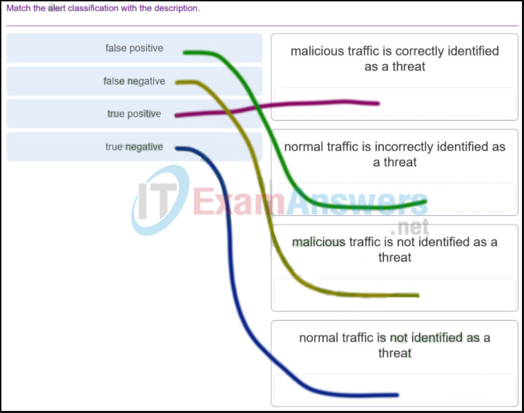 178. According to NIST, which step in the digital forensics process involves preparing and presenting information that resulted from scrutinizing data? 179. Refer to the exhibit. A cybersecurity analyst is using Sguil to verify security alerts. How is the current view sorted? 180. Which two options are window managers for Linux? (Choose two.) 181. What are the two methods that a wireless NIC can use to discover an AP? (Choose two.) 182. A client device has initiated a secure HTTP request to a web browser. Which well-known port address number is associated with the destination address? 183. Which term describes evidence that is in its original state? 184. Which three statements describe a DHCP Discover message? (Choose three.) 185. Refer to the exhibit. The PC is sending a packet to the Server on the remote network. Router R1 is performing NAT overload. From the perspective of the PC, match the NAT address type with the correct IP address. (Not all options are used.) 187. A client application needs to terminate a TCP communication session with a server. Place the termination process steps in the order that they will occur. (Not all options are used.) 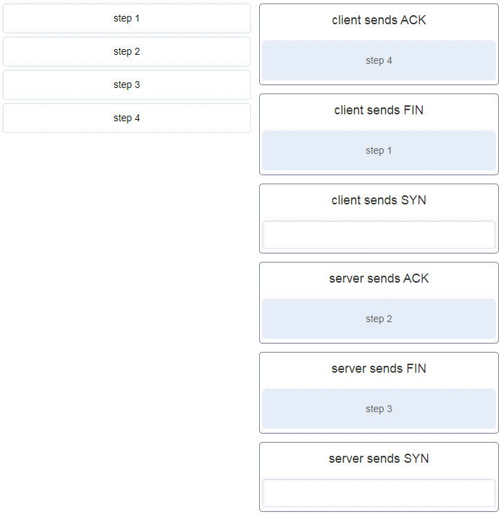 188. Match the attack vector with the description. 189. Match the security management function with the description. CyberOps Associate (Version 1.0) – CyberOps Associate 1.0 Final exam answers Q189 190. What are two functions that are provided by the network layer? (Choose two.) 191. Match the phase in the NIST incident response life cycle to the action. 192. Match the Linux CLI commands to their function. (Not all options are used.)
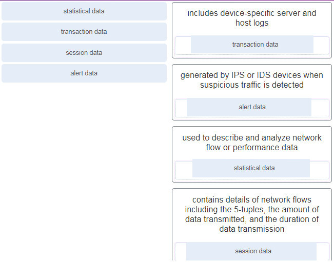
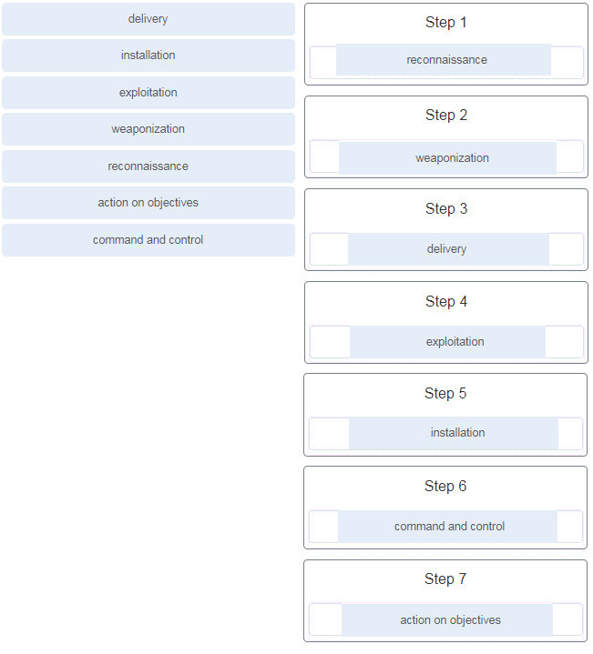
 - FINAL Exam (Answers) 22")
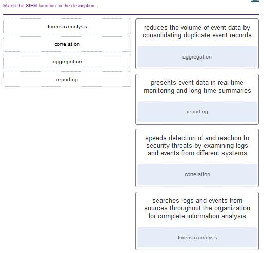
 - FINAL Exam (Answers) 25")
Details
Allows for a process to have its affinity set.
Performance
Displays resource utilization information for CPU, memory, network, disk, and others.
Startup
Allows programs that are running on system startup to be disabled.
Services
Allows for a start, stop or restart of a particular service.
 - FINAL Exam (Answers) 26")
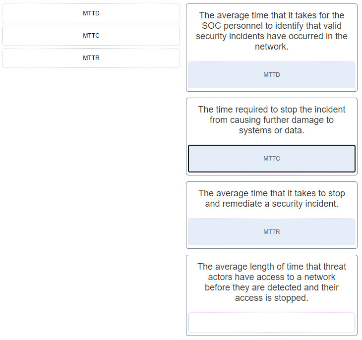
 - FINAL Exam (Answers) 29")
 - FINAL Exam (Answers) 33")
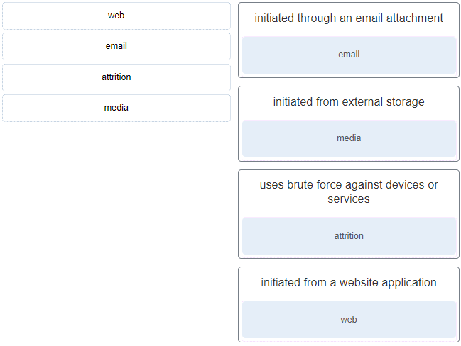 - FINAL Exam (Answers) 40")
 - FINAL Exam (Answers) 41")
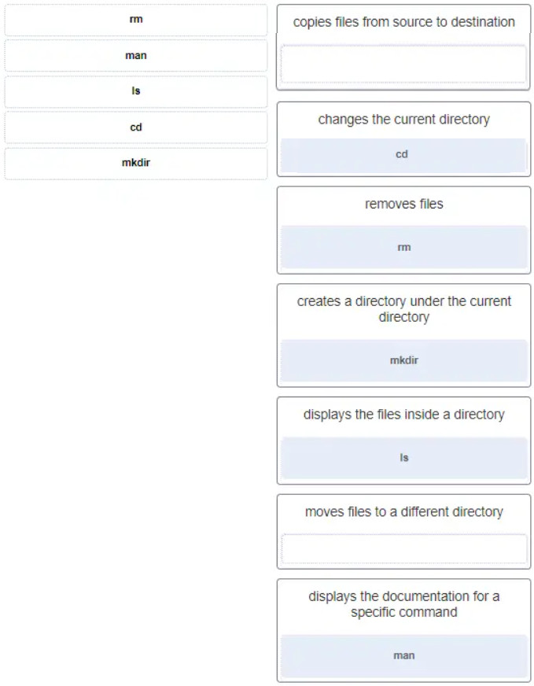